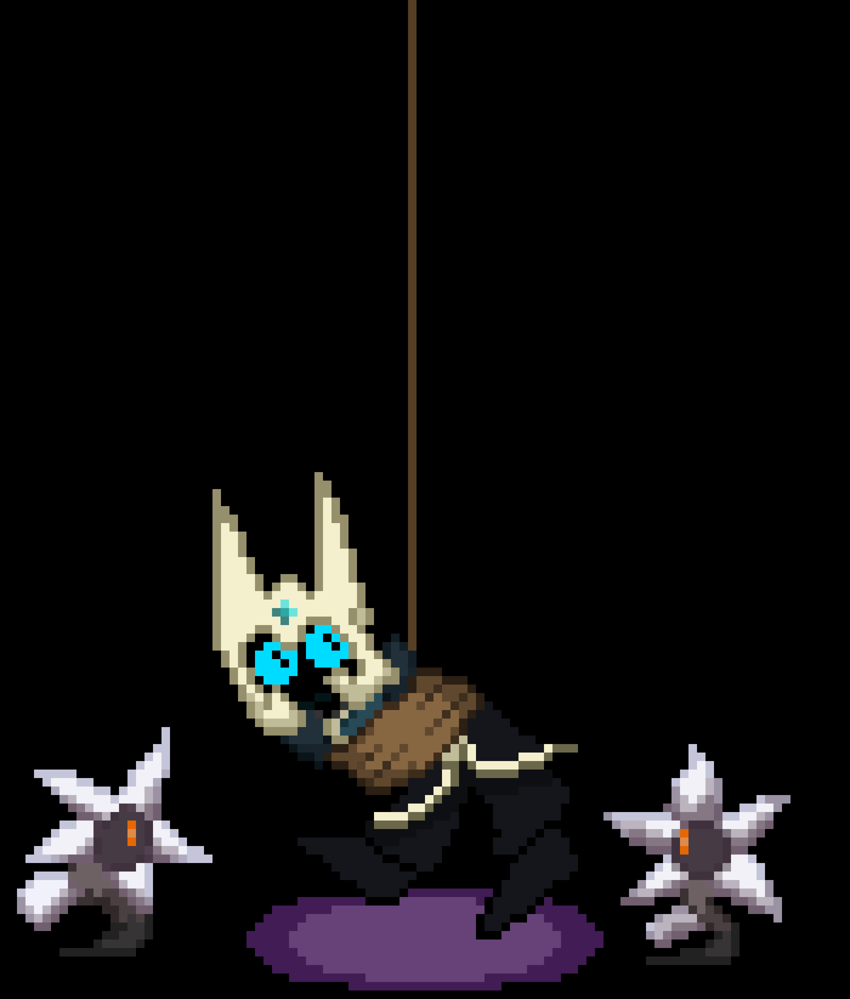
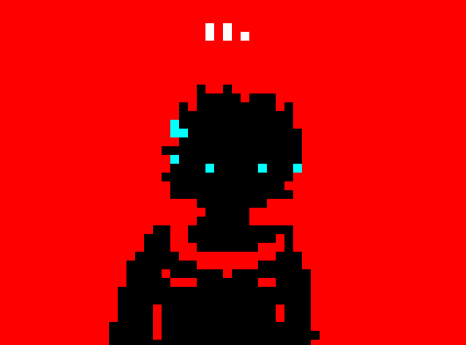

Invierno 2025

Las vacaciones de Invierno! O de verano, depende el país.
Hace rato que estamos a la mitad del año de 2025 y quiero anunciarles las nuevas Status Updates!
Donde verán las noticias más recientes sobre el desarrollo del siguiente Schizo-Land.
¡Schizo-Land 3!

Epílogo
El epílogo de Schizo-Land 2! Pues si, déjenme decirles que el epílogo sigue haciéndose! Falta poquísimo, unas últimas 10 páginas para que el cómic termine.
Básicamente esta hecho un 70% del cómic contando la parte 1 y 3.
Ahora estoy lidiando con la parte 2, aunque no se preocupen, no creo tardar otro años en terminarlo!
(Jaja...)
Schizo-Land 3
En noticias sobre la siguiente entrega de Schizo-Land, bueno, su historia tendrá que ser reescrita, pues la idea que se tenía para Schizo-Land 3 fue trasladada para la 4ta entrega.
Así es, Schizo-Land 4.
En términos de mapa, el mapa ya fue perfectamente unido con el de Schizo-Land 2, para que pueda empezar a trabajar en hacer las estructuras viejas tras los 25 años de lapso de tiempo entre Schizo-Land 1 y 2.
Aunque hay una mala noticia.
Schizo-Land 3, que tenía planeada su salida en diciembre de 2026, deberá ser retrasada indefinidamente.
Así que básicamente entramos en Hiatus, yey! 🥳🥳🥳
Los motivos no los pienso aclarar, por defender privacidad.
Todavía no puedo asegurar que Schizo-Land 3 vaya a ser en Minecraft Java, pero espero que el Hiatus haga que vayamos hacia esa dirección!
De todas formas, felices vacaciones de Invierno cuando sea que les toque! A mí? en 2 semanas.
woo!